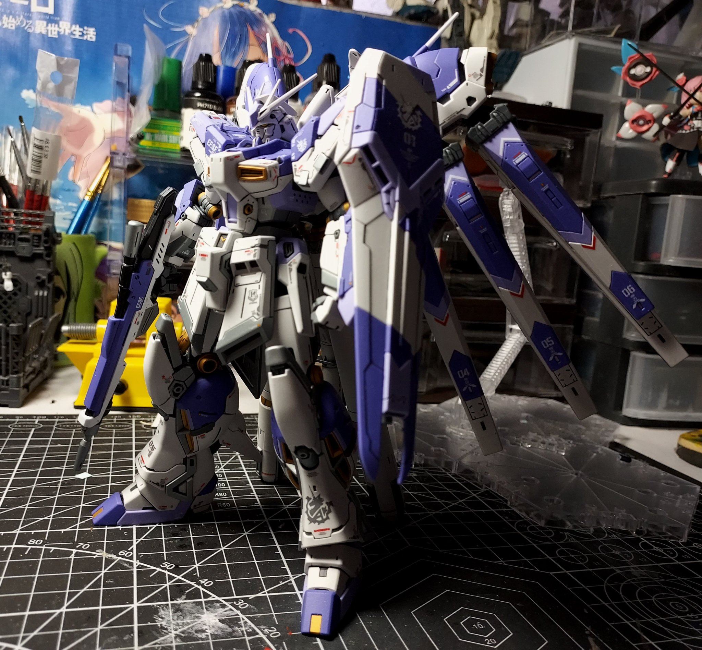
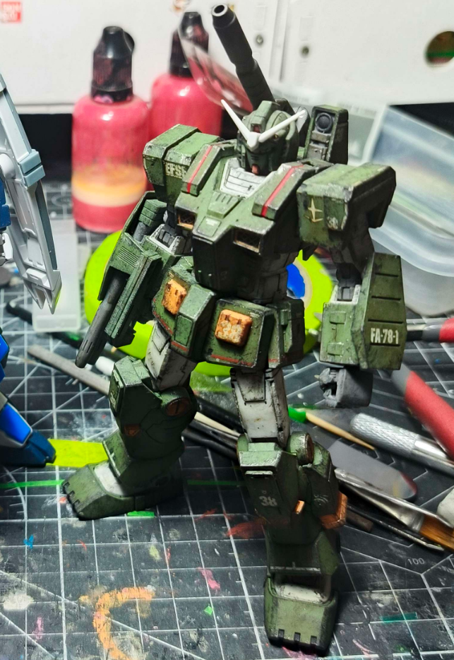
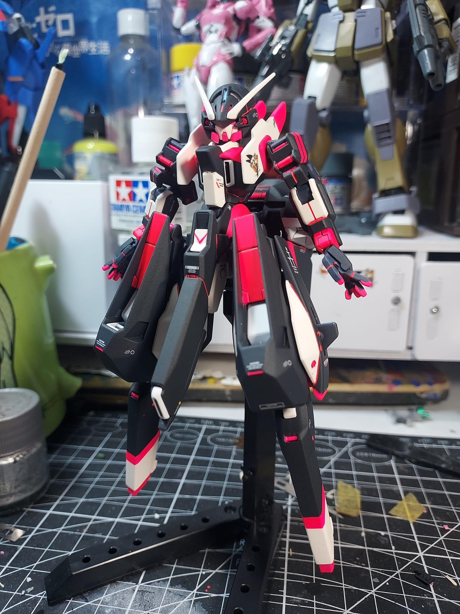
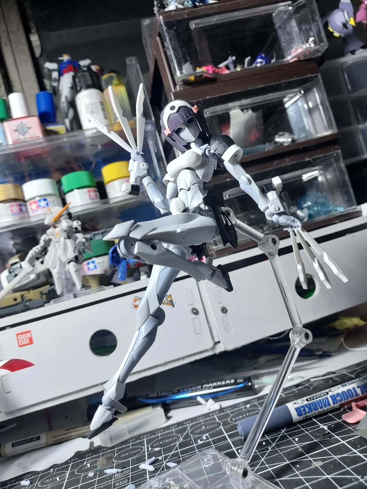
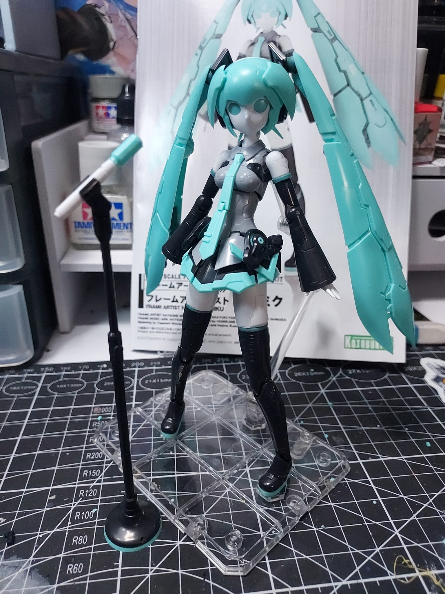
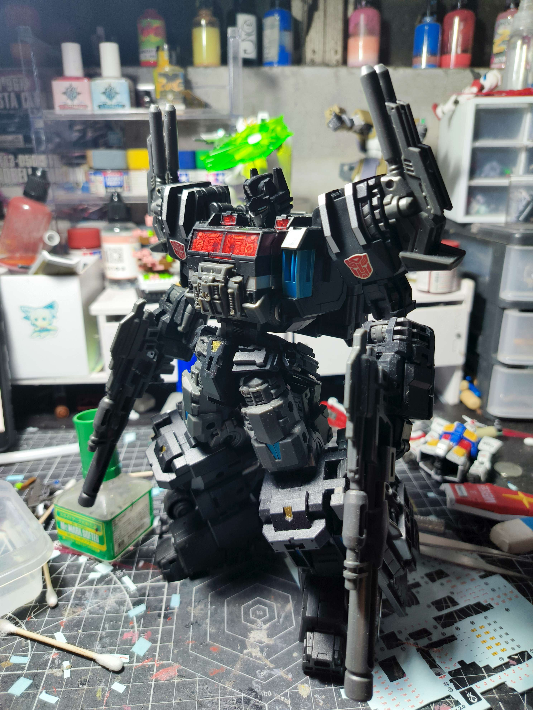
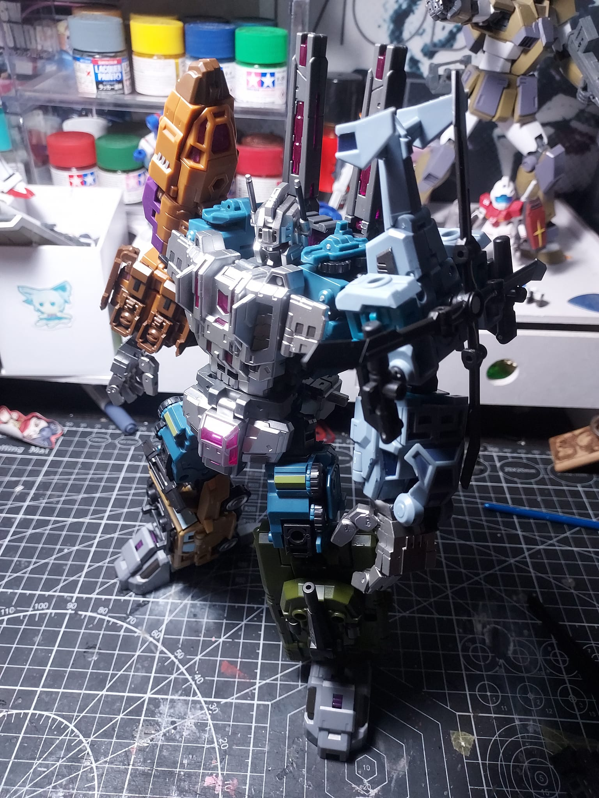
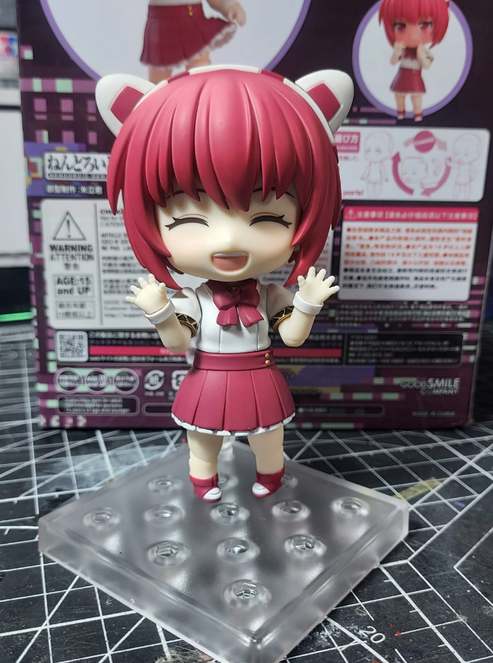

Top 10 in my collection
(In no particular order)

RG RX93 Hi-Nu(V) Gundam
The RX-93 Hi-Nu(Hi-v) is one of my all time favorite designs from Gundam, and the RG version of the model captures a lot of what I like in the original all the while tweaking
its design and proportions in an interesting way. Although I didn't like the blue color the original model had so I opted to paint it purple and added a bit more detailing.
 RG 2.0 RX-78-2
RG 2.0 RX-78-2
The RX-78, as its moniker of "Granddaddy Gundam" would suggest, is the very first Gundam in the franchise, the one that started it all.
2.0 is a second attempt at the Granddady at RG scale, making use of all the advancement in tech and model engineering in its design ever since the RG 1.0 was released in 2010.

HGTO FA-78-1 Full Armor Gundam
My personal favorite variant of the original Gundam. As is written in the name, it's a version of the original Gundam with more equipment added onto it.
For this build I decided to give it some weathering to really add more grit to the more militaristic design.

HG TR-6 Woundwort
Coming from Advance of Zeta(AOZ), the Woundwort is one of many unique designs from the side story. I like this design precisley because its so different from most other Gundam designs.
I went with a custom color scheme for this design, going with a strong neon pink paired with black and a creamy white. I'd like to get more AOZ kits but they're Premium Bandai.
 Megalomaria Ruby Eye
Megalomaria Ruby Eye
From Kotobukiya's newer, line Ruby Eye is a pretty cool robot nurse. I don't quite know much of what lore Kotobukiya has on the Megalomaria line, but I really like most of the designs so far.
Coming from mostly building gunpla, the assembly on this model felt rather different and the engineering was pretty good as well, excited to see more from this line

Megalomaria Novice
Another robot girl from Koto's Megalomaria line, I luckily managed to get Ruby Eye and Novice back to back a few months after both had released. Engineering on the base model is near 1:1 as Ruby Eye, but the slight change in armor and gear really makes a world of difference,
I quite enjoyed this build as well, hope to get more Megalomaria kits later this year.

Frame Artist Miku
An offshoot of the Frame Arms Girl line, Frame Artist Miku is re-imagining of Hatsune Miku if she leaned more into her robotic nature.
The Build was good for the most part, some spots do need abit of fixing however, due to some loose fittings. Despite that, I really like this model, and I wanna repaint it sometime this year.

Make Toys Thunder Erebus/Nucleon Quest Optimus Prime
A third party take on Power Master Optimus, this figure was a long time grail of mine, it the subject of one of the first proper reviews I've seen of a Transformers figure,
and I've been wanting it ever since. Having owned one for a few months now I gotta say it lived up to the hype I've had for it.

Knock Off Iron Factory Bruticus
Although a KO, the quality of this figure is still great, not to mention its cheaper to get the full team together compared to the original IF figures.
That said however, I gotta give all the credit to Iron factory for this fantastic redesign, I like what they were going for.
Bruticus has always just been a long time favorite combiner of mine, and I'm glad to finally get one in the collection.

Nendoroid Dorothy Haze
From Va11-Hall-A: Cyberpunk Bartender Action, Dorothy is a bubbly Lilim robot girl, a side character who's close friends with Jill Stingray, the protag of the game.
As for the Nendo itself, I think the sculpt work is pretty cute and I am glad I preordered her nearly a month in advance, however I do wish she was a bit paler to make her match her game model closer.